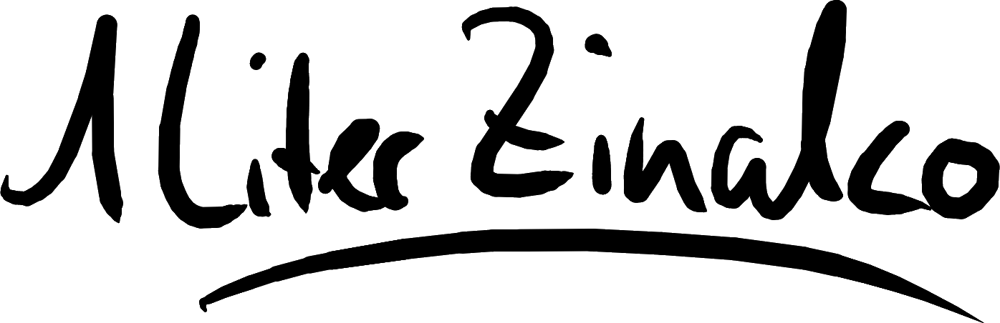

Alles hat irgendwann ein Ende.
Seit dem 16.08.2013 besitze ich nun Minecraft. Das sind mittlerweile schon mehr als fünf Jahre. Und von welchem Spiel kann man sonst noch sagen, dass es über einen solchen Zeitraum nach wie vor das selbe Spielerlebnis bieten kann? Vielleicht GTA V, vielleicht ein X-beliebiger First-Person-Shooter.
Über diese fünf Jahre habe ich mehr als 4.000 Spielstunden angesammelt und so ziemlich alles von Minecraft gesehen, was man sehen kann. Ich fing mit dem Singleplayer an und kenne ihn mittlerweile in- und auswendig. Danach habe auf Citybuild-Servern hunderte Häuser gebaut und den Hunger Games Hype miterlebt.
Am 15.07.2015 habe ich schließlich zusammen mit einem Freund den Grundstein für Chimute gelegt.
Damals war Chimute jedoch nicht mehr, als ein einzelner privater Gameserver im Rechenzentrum von Nitrado.
Und so entdeckte ich damals meine Begeisterung für Server. Mit der Zeit geriet Chimute jedoch wieder in Vergessenheit, da wir uns durch unterschiedliche Interessen, Freunde und Schulen voneinander distanzierten.
In den folgenden zwei Jahren habe ich Jannis kennengelernt und mit ihm komplette Sommerferien für Skywars draufgehen lassen und Bedwars aus den Kinderschuhen wachsen sehen.
Währenddessen hatte ich aber auch einige Phasen, in denen ich Minecraft für Wochen nicht angerührt habe. Diese verschwanden aber stets durch Updates, neue Spielmodi oder einfach mit der Zeit.
Im Sommer 2017 bemerkte ich, dass Minecraft mir keinen Inhalt mehr bot, der für mich interessant war. Und so begann meine größte Auszeit von Minecraft. Es dauerte vier Monate, bis ich wieder Minecraft gespielt habe. Der Grund für mein erneutes Interesse war ein Winter-Projekt namens Flocks, welches von DuNexMC geleitet wurde.
Ich hatte seit sehr langer Zeit wieder Spaß an Minecraft, habe einen Kanal erstellt und Videos gemacht. Mit der Zeit lernte ich immer mehr Leute kennen und beschloss meinen Kanal auszubauen. Anfang 2018 folgte dann mein erstes eigenes Projekt SKYio und Chimute war wiederbelebt. Seitdem versuche ich nun immer wieder Videos zu machen und neue Projekte zu planen.
Aber der eigentlich unaufhörliche Hype um Minecraft ist am abklingen und die Leute verlieren das Interesse daran. Unser erstes Projekt SKYio hatte innerhalb von 13 Tagen 55 Bewerbungen, was für uns als damaligen Newcomer kein schlechtes Ergebnis war.
Nach OsterVaro mit Party_E, folgte das nächste öffentliche Roleplay-Projekt Flower inklusive einer serverweiten Roleplay-Story, mit sage und schreibe 95 Bewerbungen – wir haben es geschafft Fuß zu fassen. Jedoch ließ die Blütezeit von Chimute mit den nächsten Projekten ab.
Althing mit DuNexMC & MrsMeep hatte zwar 87 Bewerbungen und nach Flower ein unglaublich großes Potenzial als Roleplay-Projekt, jedoch im Endeffekt und nicht zuletzt auch durch die Kooperationspartner, bis auf ein paar wenige, keine aktiven Spieler – es schien so, als ob jeder darauf gewartet hätte, dass jemand anderes ein separates Roleplay ins Leben ruft.
Nach Althing haben wir uns dazu entschieden, uns die Rechte für Flocks einzuräumen. Es gab viele Ideen und letztendlich nach einer längeren Unklarheit auch endlich die schriftliche Bestätigung von DuNexMC, dass Flocks ab sofort Chimute unterliegt. Damit hatten wir endlich grünes Licht für Flocks2 und wir konnten anfangen.
Jedoch gab es, selbst abgesehen von den technischen, einige Probleme. Trotz der vielen Konkurrenzprojekte, konnten wir zwar nach 8 Tagen schon 50 Bewerbungen zählen, jedoch gilt bei uns Qualität vor Quantität. Bis auf eine handvoll Spieler, haben die meisten eine schlechte Roleplay-Story, oder überhaupt keine Ideen für das Projekt.
Diese drei Bewerbungen haben einen so schlechten Satzbau und so viele Rechtschreibfehler, dass ich mich frage, ob die Bewerber die Grundschule besucht haben. Diese Beispiele sollen niemanden persönlich angreifen oder beleidigen, die Bewerbungen sind einfach objektiv schlecht.
Selbst nach so wenigen Tagen konnte man sehen, wie die Inaktivität wieder zunimmt.
Es zerreißt mir ein wenig das Herz zu sehen, wie wenig von der einst so schönen Community übriggeblieben ist. Aber, alles hat irgendwann ein Ende. Auch Chimute. Es war für mich nicht leicht diesen Entschluss zu fassen, aber ich sehe erstmal keinen Sinn mehr darin, aufwendige Minecraft-Projekte umzusetzen, die sich in keiner Art und Weise rentieren – und damit meine ich nicht nur finanziell, sondern in Form einer schönen Zeit, in der man mit anderen Leuten Spaß hat und neue Kontakte knüpft. Chimute wird zwar weiterhin bestehen, aber nicht mehr so, wie aktuell.
Am 01.01.2019 schließen wir alle öffentlichen Gameserver, unsere Modpack-API für den TechnicLauncher, das interne Forum für die Planung von Projekten, sowie den Newsletter. Außerdem verschieben wir unsere Minecraft-Projekte auf unserer Website in ein Archiv, beenden alle Kooperationen bezüglich Minecraft und verabschieden uns damit aus der Minecraft Projekt-Szene.
Ich möchte diese Möglichkeit noch einmal nutzen, um einigen Leuten zu danken.
Danke an:
- Blutspiel, für unzählbare gemeinsame Spielstunden, die administrative Unterstützung, die schauspielerische Leistung und die Verfügbarkeit, wenn Not am Mann ist.
- Sturmspiel, für die Mitgründung von Chimute.
- Zeitspiel, für die Unterstützung bei Projekten.
- Enderice, für die unglaubliche Unterstützung während der Planung von Projekten, die Moderation unserer Projekte, die schauspielerische Leistung und das schöne Haus.
- Rample & Emi, für die Moderation unserer Projekte, die unfassbaren Leistungen als Builder und den lustigsten Screenshare der Welt.
- Grentrox, für die Moderation unserer Projekte.
- Party_E, für OsterVaro, die schauspielerische Leistung und Parcours18.
- Ouroborus (& Arrol216), für die unvergesslichen Rätsel und die unglaubliche Roleplay-Story.
- Lamebambus, für die außerordentliche Aktivität.
- Cytrex, für's Mitnehmen von Enderice und die stets besten Bewerbungen.
Danke, für die schöne Zeit.
